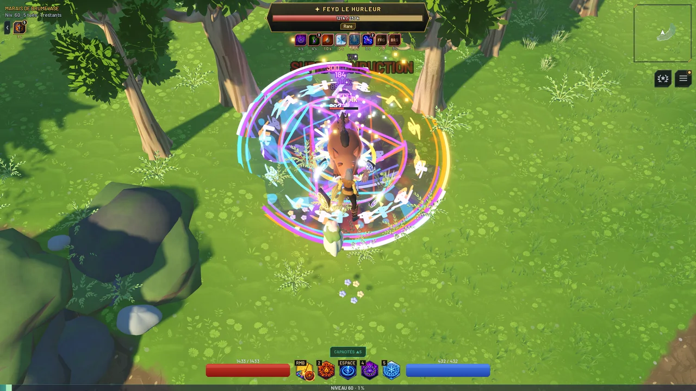
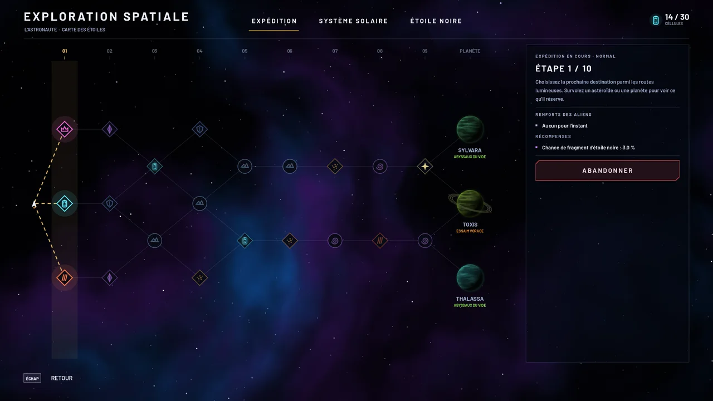
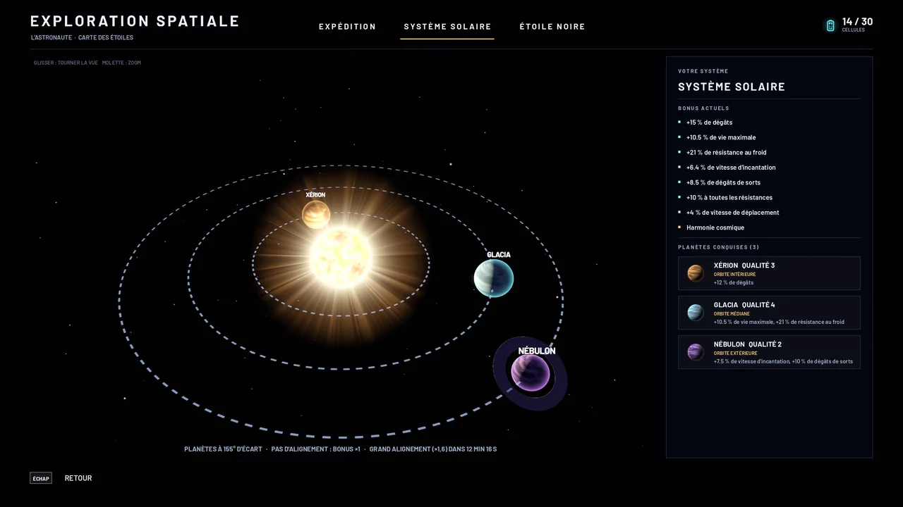
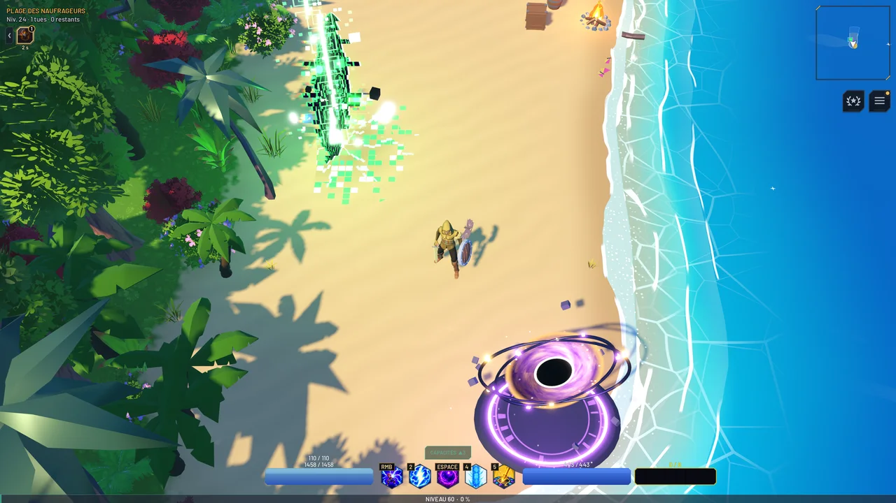
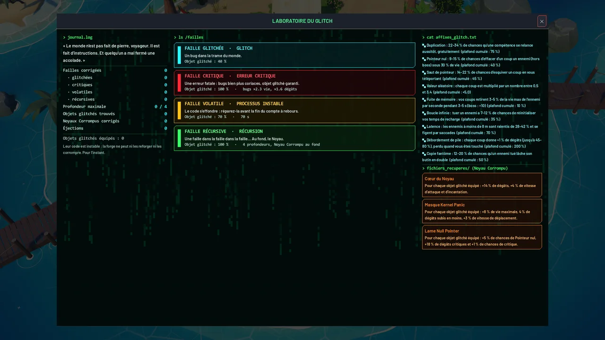

Mechanics
Runic Carving carves the runes of your four slots into the ground, one per cast: fire, cold, lightning, erosion.
Two overlapping glyphs of different elements react:
- Fire + cold: Thermal Fracture
- Fire + lightning: Plasma
- Cold + lightning: Superconduction
- Fire + erosion: Black Flame
- Cold + erosion: Frozen Necrosis
- Lightning + erosion: Void Arc
Word of Rupture detonates everything: every pair reacts, with no cooldown.


A black hole can open on a map (in the campaign from the 4th zone, and in the Wandering Lands). It spits out aliens until the rift is empty, then implodes and drops all the loot.
- Every invasion you close yields energy cells.
- The astronaut settles at the refuge after the first one.
- Expedition: one cell per jump, asteroids that empower aliens and loot, encounters with choices, and a planet to conquer at the end.
- Solar system: three orbits for conquered planets, permanent bonuses, alignments.
- Black star: three fragments open the map of the Star Devourer and its exclusive legendaries.


A glitched rift can appear on a map (in the campaign from the 3rd zone, and in the Wandering Lands). Step inside: the map un-renders itself and fills with bugs to fix.
- Glitched: the basic rift.
- Critical: much stronger bugs, a guaranteed glitched item.
- Volatile: 70 seconds.
- Recursive: four depths, then the Corrupted Core.
Glitched items carry an exclusive affix (Duplication, Null Pointer, Infinite Loop…). The Core's legendaries grow stronger with every glitched item you wear.



Finishing the first four acts opens the Wandering Lands: five randomly drawn maps, five Nightmares from level 60 to level 100.
- Affixes rolled when each map opens.
- Six lives per map. A map you leave stays open, and the refuge's RETURN portal takes you back.
- The Tree of the Lands fills up with conquered lands: density, loot, leagues.
- Respawn checkpoints at one third, two thirds and before the guardian.